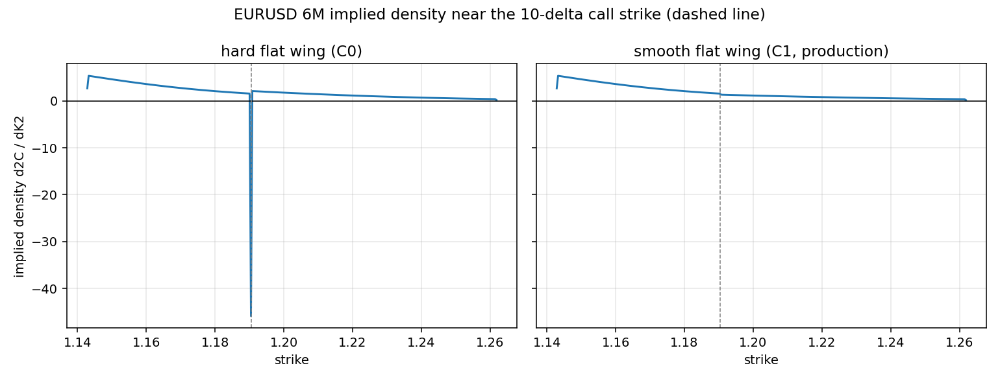
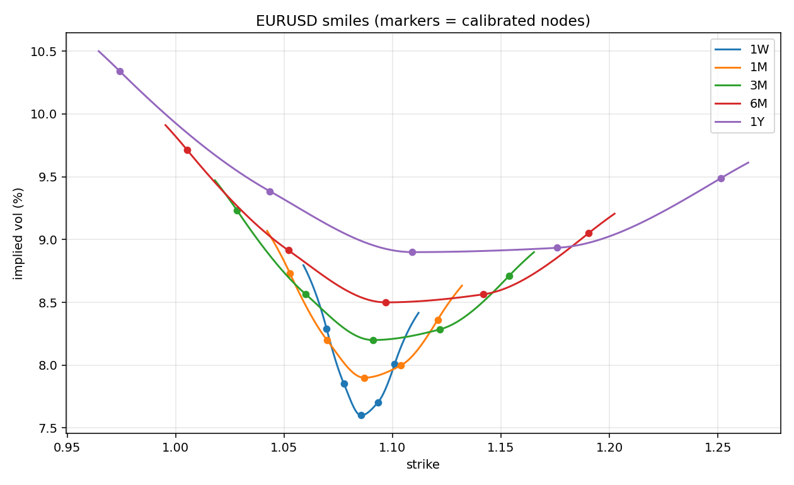

Construction of an Arbitrage-Checked FX Implied Volatility Surface from Delta-Quoted Market Instruments
Delta conventions, Reiswich–Wystup market-strangle calibration, and static no-arbitrage diagnostics
code & notebook: github.com/NavyBlueCheese/fx-vol-surface
Abstract
FX options are quoted in delta space, not strike space. For each tenor the market gives an at-the-money volatility plus risk reversals and butterflies at fixed delta levels. Turning those five numbers into a continuous, arbitrage-free volatility surface depends on two things that are easy to get wrong. The first is the delta convention, which varies by currency pair and tenor and includes a premium-adjusted variant whose call delta is not monotonic in strike. The second is the butterfly, which is quoted as a market strangle (“broker fly”), not as a direct measure of smile convexity.
This paper documents fxvol, an open-source Python engine implementing Garman–Kohlhagen pricing with a full analytic Greek set, all four FX delta conventions with correct branch selection for premium-adjusted deltas, the Reiswich–Wystup market-strangle calibration at the 25-delta and 10-delta wings, shape-preserving smile interpolation in total variance with a \(C^1\) wing extrapolation, linear-in-total-variance term interpolation, and static no-arbitrage diagnostics based on call convexity, the Durrleman condition, and calendar monotonicity.
The central acceptance criterion is that the calibrated surface must reprice its own inputs. On the illustrative data used throughout, quotes are recovered from the finished surface with a worst error of about \(10^{-11}\) volatility points against a tolerance target of \(0.01\). As a byproduct of the arbitrage diagnostics, the common practice of hard, flat-in-volatility wing extrapolation is shown to create a genuine negative-density butterfly violation at the outermost quoted strikes, and a minimal \(C^1\) smoothing is proposed that removes it.
Keywords: FX options; implied volatility surface; delta conventions; risk reversal; butterfly; market strangle; static arbitrage
JEL: C63, G13, G15
1. Introduction
An FX options desk observes, per tenor, a small set of delta-quoted instruments: the at-the-money (ATM) volatility, the 25-delta and 10-delta risk reversals, and the 25-delta and 10-delta butterflies. Everything else the desk needs — the volatility at an arbitrary strike, the price and Greeks of a vanilla, the implied risk-neutral density, and the inputs to exotic pricing models — has to be built from those quotes. Getting this almost right is easy. Use the wrong delta convention, or treat the butterfly as a convexity number, and the surface still looks reasonable; it is just off by amounts a trading desk would care about.
Malz (1997) gave an early closed-form smile built from the ATM, risk reversal, and strangle quotes. The quoting conventions themselves are documented by Reiswich and Wystup (2010, 2012) and Clark (2011), and the static no-arbitrage conditions in total-variance space come from Gatheral (2006) and Gatheral and Jacquier (2014). What’s harder to find is an open implementation that can be checked end to end. This paper uses one acceptance test above all others: the finished surface must reprice the exact quotes it was built from, to a tolerance far tighter than anything tradeable. The contributions are:
- A forward-form Garman–Kohlhagen pricing core with the full analytic Greek set, including vanna and volga, validated against central finite differences.
- A complete treatment of the four FX delta conventions (spot or forward, each premium-adjusted or unadjusted), configurable per currency pair and tenor, including a robust strike solver for the premium-adjusted call delta, which is not monotonic in strike and requires explicit selection of the market branch.
- An implementation of the Reiswich–Wystup market-strangle butterfly calibration, mapping the quoted butterfly to the scalar price of a single-volatility strangle and solving the smile wing volatilities to reprice that scalar under the risk-reversal constraint.
- A smile and term-structure interpolation scheme — monotone cubic in total variance within tenor, linear in total variance across tenors — with a documented \(C^1\) wing extrapolation.
- Static no-arbitrage checks (call-price convexity, the Durrleman \(g(k)\) condition, and calendar monotonicity of total variance) that report violations with their location and never silently modify quotes.
- An adversarial test suite of 209 tests at roughly 94% line coverage, whose headline test is the round trip above, run for both an unadjusted pair (EURUSD) and a premium-adjusted pair (USDJPY-style).
2. Market Data and Quoting Mechanics
The FX rate \(S\) is quoted as units of domestic (quote) currency per unit of foreign (base) currency; for EURUSD the euro is foreign and the dollar is domestic. Rates are continuously compounded and the forward satisfies covered interest parity, \(F = S\,e^{(r_d - r_f)T}\).
Per tenor the market quotes three instrument types at delta levels of 25 and 10. The risk reversal \(RR = \sigma(\Delta\text{-call}) - \sigma(\Delta\text{-put})\) measures skew at that delta level. The butterfly \(BF\) measures convexity, but the quoted number is a market-strangle quote: it states that a strangle struck at the two strikes generated by the single volatility \(\sigma_{ATM} + BF\) has a given price — it is not the average of the smile’s wing volatilities minus the ATM volatility, although the two coincide when the risk reversal is zero. The naive relations
\[\sigma(25\Delta c) = \sigma_{ATM} + BF_{25} + RR_{25}/2, \qquad \sigma(25\Delta p) = \sigma_{ATM} + BF_{25} - RR_{25}/2\]
hold only for the smile strangle and are used only as solver seeds.
Table 1. Sample EURUSD market quotes (vols in %, spot 1.0850, USD rate 4.30%, EUR rate 2.50%)
| tenor | T (y) | forward | ATM | 25d RR | 25d BF | 10d RR | 10d BF |
|---|---|---|---|---|---|---|---|
| 1W | 0.0192 | 1.085375 | 7.60 | −0.15 | 0.18 | −0.28 | 0.55 |
| 1M | 0.0822 | 1.086606 | 7.90 | −0.20 | 0.20 | −0.37 | 0.65 |
| 3M | 0.2521 | 1.089934 | 8.20 | −0.28 | 0.23 | −0.52 | 0.78 |
| 6M | 0.5014 | 1.094836 | 8.50 | −0.35 | 0.25 | −0.66 | 0.90 |
| 1Y | 1.0000 | 1.104707 | 8.90 | −0.45 | 0.28 | −0.85 | 1.05 |
The negative 25-delta risk reversal at every tenor (euro puts over euro calls) reflects the typical euro downside skew, and both butterflies widen with tenor.
3. Methodology
3.1 Pricing model and Greeks
Vanillas are priced with the Garman–Kohlhagen (1983) model in forward form. With forward \(F\), strike \(K\), volatility \(\sigma\), year fraction \(T\), domestic discount factor \(df_d = e^{-r_d T}\), and \(\phi = +1\) for calls, \(-1\) for puts:
\[d_1 = \frac{\ln(F/K) + \sigma^2 T/2}{\sigma\sqrt{T}}, \qquad d_2 = d_1 - \sigma\sqrt{T}\]
\[V = \phi\, df_d \big(F\,N(\phi d_1) - K\,N(\phi d_2)\big)\]
The forward form keeps the delta conventions straight, and put–call parity, \(C - P = df_d(F-K)\), holds exactly by construction. The engine exposes the full analytic Greek set — spot and forward delta, gamma, vega, vanna, volga, theta, and both rhos — each checked against central finite differences at tight tolerance.
3.3 ATM conventions
The default is the delta-neutral straddle (DNS): the strike at which a straddle has zero net delta in the pair’s own convention. For unadjusted deltas, \(K_{ATM} = F\,e^{+\sigma^2 T/2}\); for premium-adjusted deltas the sign flips, \(K_{ATM} = F\,e^{-\sigma^2 T/2}\), because the straddle delta is proportional to \(N(d_2) - N(-d_2)\) rather than \(N(d_1) - N(-d_1)\). ATM-forward and ATM-spot conventions are also supported.
3.4 Market strangle vs. smile strangle
This is where simple implementations usually go wrong. The quoted butterfly carries exactly one piece of information: the price of the market strangle. Following Reiswich and Wystup (2012), per wing level (25-delta, then 10-delta):
- Form the market strangle volatility \(\sigma_{ms} = \sigma_{ATM} + BF\).
- Compute the market strangle strikes at delta \(\pm\)level using \(\sigma_{ms}\).
- Compute the market strangle price \(v_{ms} = \text{Call}(K_{c,ms}, \sigma_{ms}) + \text{Put}(K_{p,ms}, \sigma_{ms})\).
- Solve for smile wing volatilities \((\sigma_c, \sigma_p)\) subject to the risk-reversal constraint \(\sigma_c - \sigma_p = RR\) and the strangle-repricing constraint \(\text{Call}(K_c, \sigma_c) + \text{Put}(K_p, \sigma_p) = v_{ms}\).
The risk-reversal constraint reduces this to a 1-D root find in \(\sigma_c\), solved with Brent’s method, seeded by the naive volatility (exact at zero RR). Convergence and reprice residual are asserted after solving — the calibrator never returns an unverified smile.
Table 2. Market-strangle calibration of the 25-delta wing (vols in %)
| tenor | \(\sigma_{ms}\) | \(v_{ms}\) | \(\sigma_{25c}\) | \(\sigma_{25p}\) | quoted BF | smile BF | gap (vol pts) |
|---|---|---|---|---|---|---|---|
| 1W | 7.780 | 0.00348783 | 7.704 | 7.854 | 0.180 | 0.179 | 0.0008 |
| 1M | 8.100 | 0.00752195 | 7.998 | 8.198 | 0.200 | 0.198 | 0.0023 |
| 3M | 8.430 | 0.01373144 | 8.284 | 8.564 | 0.230 | 0.224 | 0.0059 |
| 6M | 8.750 | 0.02015087 | 8.564 | 8.914 | 0.250 | 0.239 | 0.0109 |
| 1Y | 9.180 | 0.03000835 | 8.934 | 9.384 | 0.280 | 0.259 | 0.0207 |
The smile-strangle butterfly systematically differs from the quoted market-strangle butterfly whenever the risk reversal is nonzero, and the gap widens with skew — from under a tenth of a basis point at one week to about 2 bp at one year at the 25-delta wing, and about 3.5 bp at the one-year 10-delta wing. A naive construction that plugs the quoted butterfly directly into the smile-strangle algebra is biased at exactly the strikes where exotic hedging happens.
3.5 Smile interpolation and wing extrapolation
The calibration yields five nodes per tenor (10Δ put, 25Δ put, ATM, 25Δ call, 10Δ call) as strike–volatility pairs. Within the quoted range the smile is interpolated with a shape-preserving monotone cubic (PCHIP) in \((k, w)\) coordinates, where \(k = \ln(K/F)\) and \(w = \sigma^2 T\) is total implied variance — PCHIP avoids the overshoot a natural cubic spline exhibits through only five points.
Wing extrapolation is where arbitrage enters. Holding volatility flat beyond the outermost node is continuous but not differentiable there — the slope jumps to zero, a kink that the arbitrage checker flags as a genuine butterfly violation at every 10-delta strike. The production scheme keeps flat volatility as the asymptote but decays the edge slope exponentially over a configurable band (half the node span by default), making the smile \(C^1\) at the last node and keeping the density bounded. The hard-flat mode is still in the library for comparison, and the checker flags it, as it should.

3.6 Term-structure interpolation
Across tenors the surface interpolates linearly in total variance at constant forward log-moneyness:
\[w(k, T) = (1-\lambda)\,w_i(k) + \lambda\,w_{i+1}(k), \qquad \lambda = \frac{T - T_i}{T_{i+1} - T_i}\]
with each pillar’s total variance evaluated at \(K_i = F_i e^k\), so moneyness is held constant relative to each pillar’s own forward (Gatheral 2006). Variance is additive in time, keeping calendar arbitrage controllable. Outside the pillar range, volatility is held flat at constant \(k\), so extrapolated total variance grows proportionally with \(T\) and cannot create calendar arbitrage.
4. No-Arbitrage Diagnostics
The engine treats arbitrage checks as diagnostics, never silent repairs. Three static conditions are checked on a dense grid per pillar, with violations reported by tenor, strike, and magnitude:
- Undiscounted call prices must be non-increasing and convex in strike (the second derivative is the undiscounted risk-neutral density and must be non-negative).
- The Durrleman condition, in total-variance space with derivatives taken in log-moneyness: \[g(k) = \left(1 - \frac{k w'}{2w}\right)^2 - \frac{w'^2}{4}\left(\frac{1}{w} + \frac{1}{4}\right) + \frac{w''}{2} \ge 0\]
- Calendar monotonicity: total variance \(w(k,T)\) must be non-decreasing in \(T\) at every fixed \(k\) across adjacent pillars.
Deliberately broken inputs are caught in the test suite: a volatility frown triggers located convexity and Durrleman violations, and a term structure whose short-tenor variance exceeds the next pillar’s triggers located calendar violations. The clean sample surface passes all checks.
5. Results
Strikes widen with maturity, put wings carry higher volatilities than call wings (negative risk reversal), and the ATM strike sits slightly above the forward, as the unadjusted delta-neutral-straddle convention implies.
Table 3. Calibrated smile nodes per tenor (strike / volatility in %)
| tenor | 10Δ put | 25Δ put | ATM | 25Δ call | 10Δ call |
|---|---|---|---|---|---|
| 1W | 1.0696 / 8.289 | 1.0775 / 7.854 | 1.0854 / 7.600 | 1.0933 / 7.704 | 1.1010 / 8.009 |
| 1M | 1.0527 / 8.731 | 1.0699 / 8.198 | 1.0869 / 7.900 | 1.1038 / 7.998 | 1.1208 / 8.361 |
| 3M | 1.0284 / 9.230 | 1.0600 / 8.564 | 1.0909 / 8.200 | 1.1217 / 8.284 | 1.1537 / 8.710 |
| 6M | 1.0053 / 9.712 | 1.0520 / 8.914 | 1.0968 / 8.500 | 1.1420 / 8.564 | 1.1905 / 9.052 |
| 1Y | 0.9742 / 10.340 | 1.0435 / 9.384 | 1.1091 / 8.900 | 1.1759 / 8.934 | 1.2515 / 9.490 |

5.1 The headline round trip
The acceptance criterion for the whole project: starting from the finished surface rather than any intermediate calibration object, recover the quotes and compare against the inputs. Targets were \(0.01\) volatility points and \(10^{-6}\) in price.
Table 4. Round-trip absolute errors (volatility points)
| tenor | ATM | 25d RR | 25d BF | 10d RR | 10d BF |
|---|---|---|---|---|---|
| 1W | 0.00e+00 | 1.55e-12 | 6.09e-13 | 3.44e-12 | 7.40e-12 |
| 1M | 0.00e+00 | 9.42e-14 | 8.67e-16 | 3.67e-12 | 4.97e-12 |
| 3M | 0.00e+00 | 7.34e-13 | 4.87e-13 | 5.25e-12 | 5.76e-12 |
| 6M | 0.00e+00 | 1.05e-12 | 1.10e-12 | 9.64e-12 | 1.22e-11 |
| 1Y | 0.00e+00 | 2.83e-12 | 1.57e-12 | 2.67e-12 | 3.72e-12 |
The worst error across all tenors and all five quotes is \(1.225\times 10^{-11}\) volatility points, nearly nine orders of magnitude inside the tolerance.
6. Software Validation
The engine ships with an adversarial pytest suite of 209 tests, including Hypothesis property-based tests, at roughly 94% line coverage; ruff and mypy both pass clean. Test categories mirror where FX surface implementations actually fail: the headline round-trip test (both unadjusted and premium-adjusted pairs), convention round trips across all four delta conventions with deep wings, a premium-adjusted branch test that constructs a target delta hit by two strikes and asserts the market root is returned, DNS tests including the sign flip, Greeks checked against central finite differences, market-strangle repricing exactness, and deliberately broken surfaces to verify the arbitrage checker actually detects and locates violations.
7. Limitations and Future Work
- The tenor calendar uses calendar-day rolls with an act/365 fixed day count and no holiday calendar or cut times; a business-day calendar is an isolated extension point in the data layer.
- Arbitrage checks diagnose and locate violations but deliberately do not repair them.
- The interpolated smile is a market-consistent interpolant, not a dynamics model; Greeks are sticky-strike by construction.
- Two extensions are architected for but not implemented: vanna-volga pricing of exotics (consuming the already-exposed ATM and wing vega, vanna, and volga), and SABR smile calibration (Hagan et al. 2002), implementing the same
SmileModelinterface the interpolated smile satisfies.
References
Clark, I. J. (2011). Foreign Exchange Option Pricing: A Practitioner’s Guide. Wiley.
Garman, M. B. and Kohlhagen, S. W. (1983). Foreign currency option values. Journal of International Money and Finance, 2(3), 231–237.
Gatheral, J. (2006). The Volatility Surface: A Practitioner’s Guide. Wiley.
Gatheral, J. and Jacquier, A. (2014). Arbitrage-free SVI volatility surfaces. Quantitative Finance, 14(1), 59–71.
Hagan, P. S., Kumar, D., Lesniewski, A. S., and Woodward, D. E. (2002). Managing smile risk. Wilmott Magazine, September, 84–108.
Malz, A. M. (1997). Estimating the probability distribution of the future exchange rate from option prices. Federal Reserve Bank of New York.
Reiswich, D. and Wystup, U. (2010). A guide to FX options quoting conventions. The Journal of Derivatives, 18(2), 58–68.
Reiswich, D. and Wystup, U. (2012). FX volatility smile construction. Wilmott, 2012(60), 58–69.